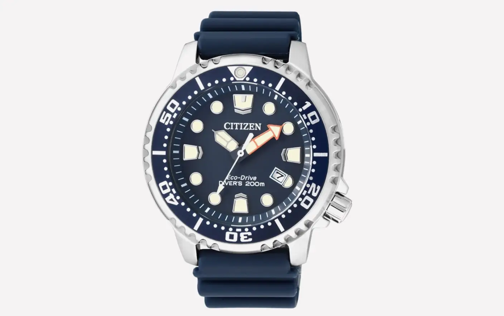
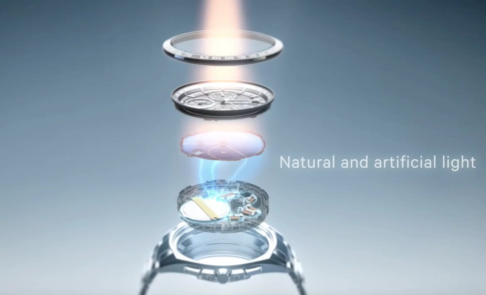
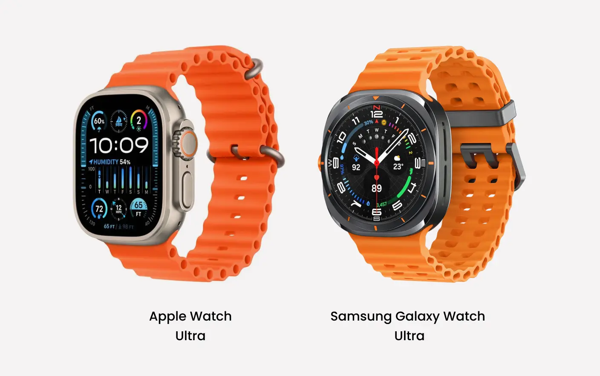
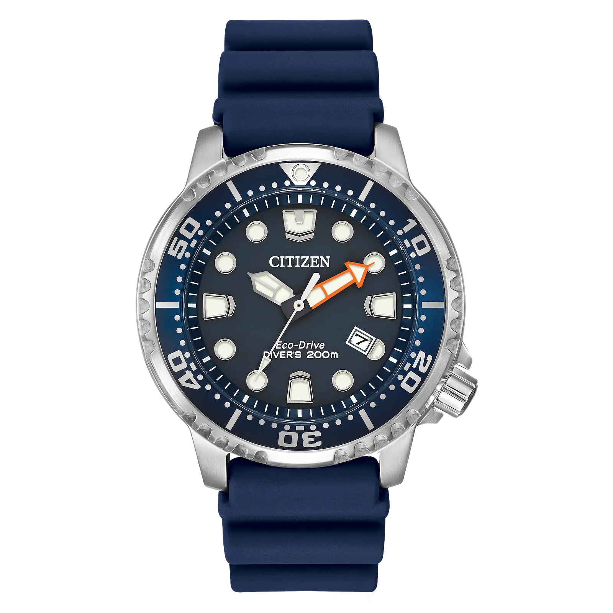
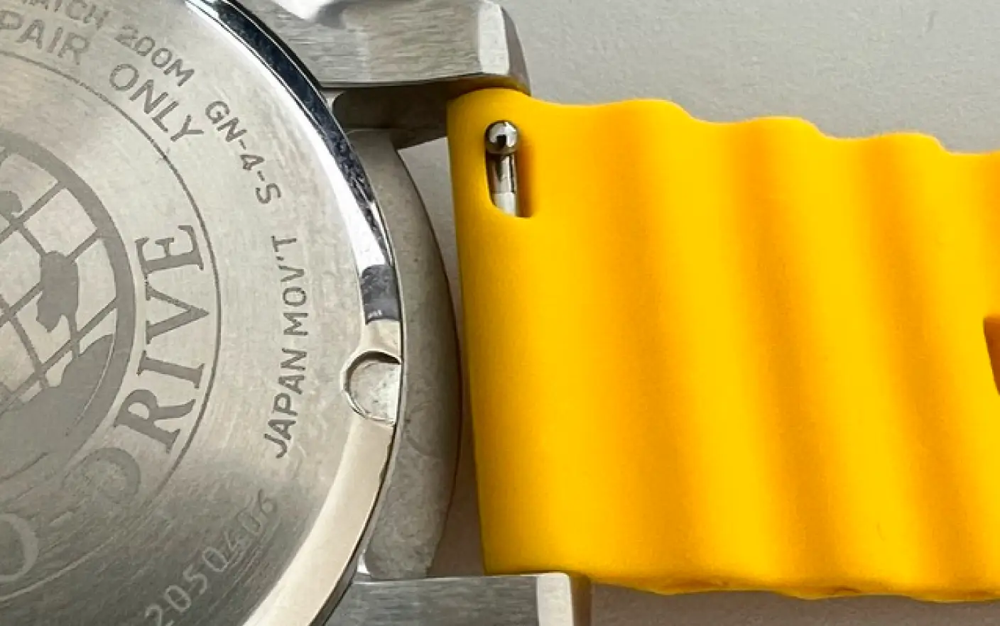
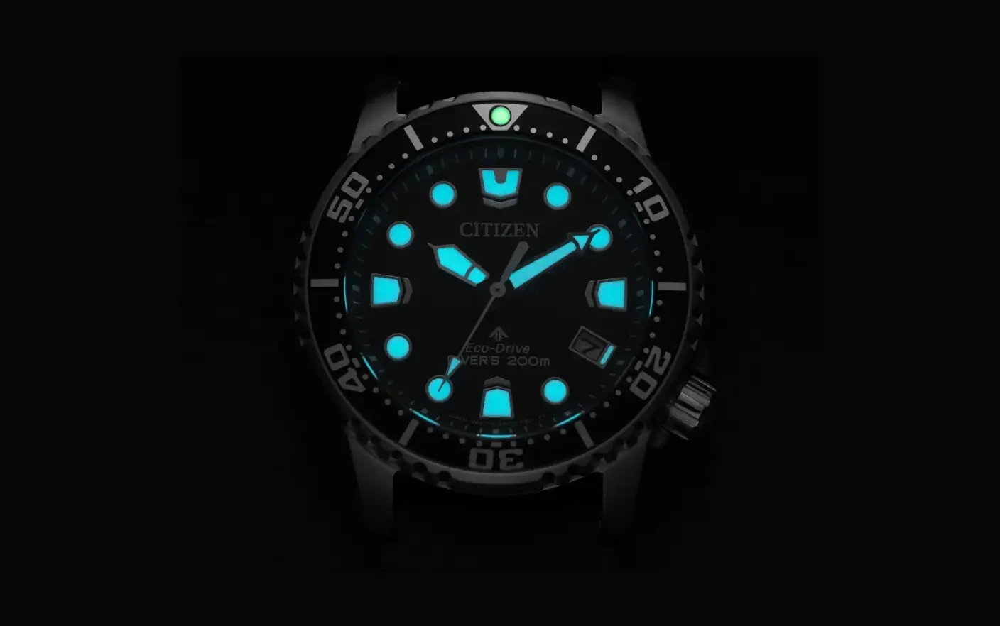
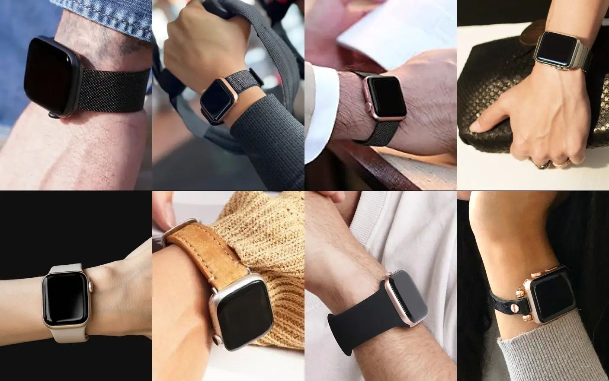
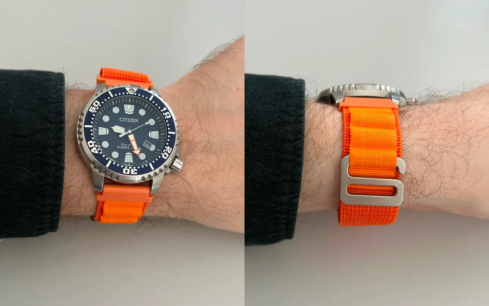
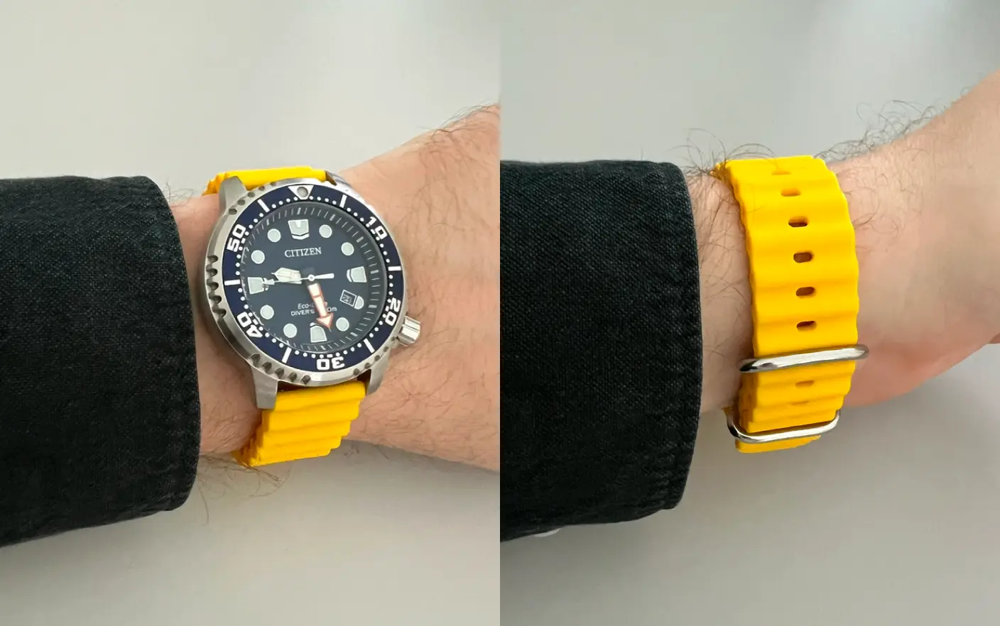

Why I Ditched My Apple Watch for a Quartz Watch—and Never Looked Back
I have always been a HUGE Apple Watch fan. I used this device day and night, but at some point, after couple of years usage, I realized that I don’t like it anymore. The biggest issue was that the battery drained too fast, so I had to charge it three times a day. I should add that I was wearing it at night to see the time if I woke up in the middle of the night.
In 2024, Apple introduced the Apple Watch Series 10, and my initial thought was to buy that new version. However, I was surprised to find out that it has the same battery capacity as my old Apple Watch SE 1st generation.
At some point, I recalled that after my grandpa passed away, he left a Seiko watch. It was a nice, slim watch that ran for years on a single battery charge. I don’t have access to that watch anymore, but I decided to see what I could buy instead of a smartwatch.
Another issue with the Apple Watch was that it sent too many notifications. All the notifications from my iPhone, plus Apple Watch notifications on top of that. Notifications about activity or sleep or something else. It all just added more stress.
Apple claims that with Apple Watch you don’t need to use your iPhone as often, but in reality, you end up using both your iPhone and Apple Watch.
On top of that, Apple decided to make my Apple Watch obsolete. So I can’t install the latest watchOS anymore on my device, which is only four years old. It means that Apple can perfectly control sales of the new watches they release on the market. And I feel that I don’t truly own the device anymore.
So I did some research on what watch I could buy, and I started with Seiko first, but I didn’t want to buy my grandpa’s version. I wanted something new. And at some point, Citizen Promaster Dive, BN0151-09L grabbed my attention.

Citizen watches use Eco-Drive technology, which converts any light source into energy to recharge the battery—not just sunlight, but also electrical light. This means no more battery changes, practically ever! It’s a sustainable and convenient feature that immediately appealed to me. They hide that solar cell behind the watch face. And somehow light can pass through it.

Some websites claim that battery lifetime is 10-15 years. And according to Citizen, the watch can:
- Operate for approximately 6-12 months on a full charge when fully powered
- Maintain timekeeping functionality even in complete darkness for up to 6 months after a full charge
- Continuously recharge through exposure to any light source
At some point during my research, I realized how much I love Apple Watch bands. They’re well-designed with an interesting look and are usually comfortable to use. This is what I was regretting losing.
Then I found this image of a Samsung watch that was trying to copy the Apple Watch Ultra, and it clicked! Conceptually, it’s a visually complicated device, with a bright orange wavy band. And overall, it looks very similar to an Apple Watch. Not exactly, but similar.

So I realized that I can repeat that experience but without using a smartwatch. Thanks to Aliexpress, today you can buy any kind of watch band that has the Apple Watch band look but can be attached to any watch. The fact that I love Apple Watch bands so much was probably part of the reason I wanted to wear it - because you can’t just wear a pretty band without the device.
So in the end, I bought that Citizen watch.
The stock band was total rubbish compared to Apple’s. So I bought a couple of Apple Watch bands that were adapted for classic watches on Aliexpress. On the image you can find name of each.
 
That Citizen watch has another feature that I love. Its lume is one of the longest-lasting on the market. So when I wake up, even as late as 6 AM, I’m still able to read the time, even in complete darkness. I like that it’s charged by light and not by a battery. It works by absorbing light energy and storing it in the electrons of the luminous material. When the lights go out, these electrons gradually release the stored energy as light, allowing the watch hands and markers to glow in the dark. It’s a fascinating and I think way smarter way to use physics, compared to a smart watch.

Because of the battery issue, most people wear the Apple Watch with the display off. So you can’t see the time from the side until you flip your wrist 90 degrees toward your face. Now, when I’m wearing a physical watch, noticing that feels odd. A watch that most of the time has no face.

I’m really happy with that transition. I like that I replaced a watch that I need to charge three times per day with a watch that I don’t need to charge at all.
 
I like that my new Citizen watch has these characteristics:
- Not a smartwatch, no notifications, less stress
- Uses a battery rechargeable by any light source, reducing waste
- Potential battery lifetime of 10-15 years
- Robust luminous material that glows for hours
- Allows for customization with interchangeable watch bands
- Provides a simple, reliable timekeeping experience without technological complexity
- Most importantly, I am the true owner of the watch; it will become obsolete only when I decide, not when Apple decides. So potential lifetime is indefinite.
If you’re thinking to try to replace your smart watch with something more classical, consider what truly matters to you in a timepiece. For me, the journey from a high-tech Apple Watch to a classic Citizen Promaster Dive was about rediscovering simplicity, sustainability, and genuine utility. It’s not just about telling time, but about finding a device that seamlessly integrates into your life without constant demands for charging or attention.